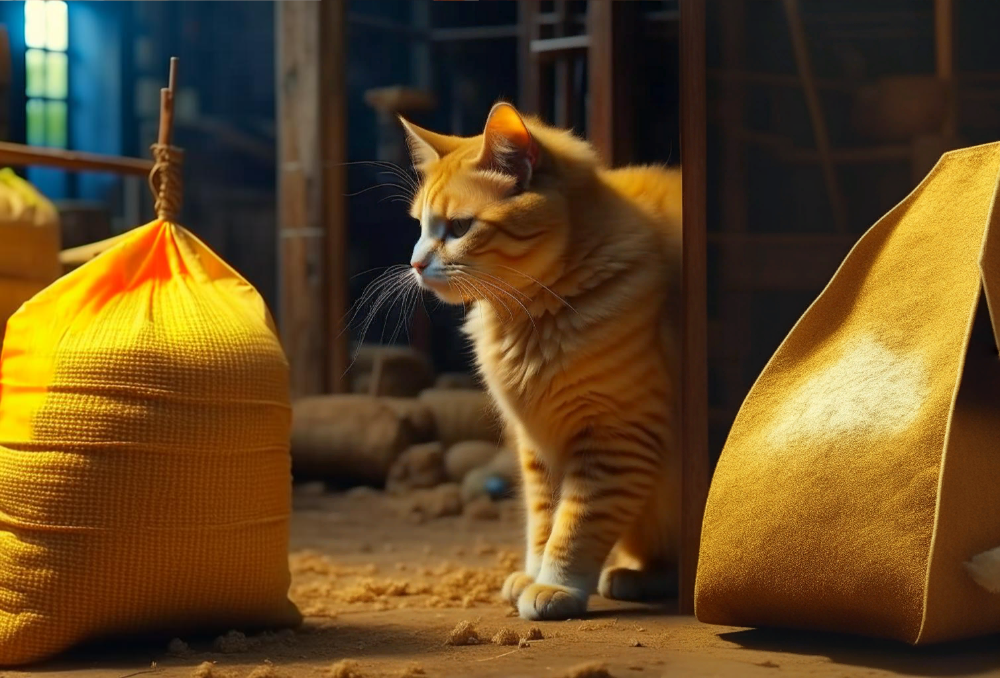

Два клена - продолжение.
Евгений Шварц
ДЕЙСТВИЕ ВТОРОЕ Декорация первого действия. Поляна преобразилась до неузнаваемости. Проложены дорожки, усыпанные -песком. Выросла ветряная мельница, весело машет крыльями. Возле мельницы - деревянный навес. Под ним - мешки с мукой и зерном. Рядом - второй навес. Под ним - мешки с золотом. Котофей похаживает, возле мешков с зерном.
К о т о ф е й. Разбирайте, разбирайте зерно, мышки мои славные. Всего только полмешочка и осталось.
Т о н е н ь к и е г о л о с а. Разбираем, разбираем, стараемся. Только ты, хозяин, рассказывай, а то у нас зубки чешутся, как бы мы мешки не погрызли.
К о т о ф е й. Ну, слушайте, мышки-норушки, котам самые первые подружки.
Тоненький смех.
Жили-были три мышки, одна рыженькая, другая беленькая, а третья полосатенькая.
Тоненький смех.
И до того они были дружны, что даже кот их боялся. Подстережёт он беленькую, а его рыженькая за лапку, а полосатенькая за усы.
Смех.
Погонится он за полосатенькой - его беленькая за хвост, а рыженькая за ушко.
Смех.
Что тут делать? Думал кот, думал и позвал двух своих родных братьев. Позвал он их... Чего вы не смеётесь?
То н е н ь к и е г о л о с а. А нам не до смеху.
К о т о ф е й. Мало ли что! Смейтесь, а то худо будет.
Мыши смеются принуждённо.
Позвал кот двух братьев и говорит: так и так, братцы, обижают меня мыши. Помогите. Сам я рыжий и схвачу рыженькую мышку, ты, белый, хватай беленькую, а ты, полосатый, полосатенькую. Вот мы с обидчицами и разделаемся. Смейтесь!
Принуждённый смех.
Подслушали котов три мышки-подружки и загрустили. Что тут делать, как тут быть? И придумали. Забрались они в печку, в золе вывалялись и стали все трое серенькими.
Мыши смеются радостно.
Выбежали они прямо на трёх братьев, а те уши развесили, не знают, которую хватать.
Хохот.
С тех пор стали все мыши серенькими.
Хохот.
А коты хватают всех мышей без разбора.
Хохот обрывается.
Смейтесь!
Т о н е н ь к и е г о л о с а. А мы, хозяин, всю работу кончили, отпусти нас. В норках мышата без родителей соскучились.
К о т о ф е й. А ну, дайте взглянуть на вашу работу. Да не бойтесь, не трону, не пищите. (Подходит к мешкам.) И в самом деле постарались. Всё славно, ступайте. Целый год за это ни одной мыши не обижу.
Т о н е н ь к и е г о л о с а. Спасибо, хозяин! Спасибо, Котофей Иванович!
К о т о ф е й. Бегите!
Т о н е н ь к и е г о л о с а. Прощайте, Котофей Иванович! Прощай. Ха-ха-ха! Полосатенькая - за хвост, а рыженькая - за лапку. Ха-ха-ха! Беленькая - за ушко, а полосатенькая - за нос. Ха-ха-ха!
Затихают вдали.
К о т о ф е й. Ох! Триста тридцать три сказки рассказал, умаялся. (Усаживается под деревом, вылизывается тщательно) .
Выбегает ме д в е д ь; он весь в муке, словно мельник. За ним - Ш а р и к.
М е д в е д ь. Ну, как там последние мешки?
Котофей не отвечает.
Ш а р и к. Да не спрашивай ты его! Когда он умывается, то ничего не слышит. (Подбегает к мешкам.) Готовы, несём. (Помогает медведю взвалить оба мешка на спину.) М е д в е д ь. Солнце ещё вон как высоко стоит, а мы работу кончаем. Вот радость-то! (Убегает.) Шарик - за ним. Но добежав, возвращается к коту. Но дойдя до кота, бежит к мельнице. Наконец останавливается в отчаянии.
Ш а р и к. Идём на мельницу.
К о т о ф е й. Не пойду!
Ш а р и к. Что ты со мной делаешь, злодей! Сижу на мельнице - за тебя душа болит. Бегу сюда - за хозяина беспокоюсь. Пожалей ты моё бедное сердце! Порадуй меня, пойдём. Держитесь все вместе, рядышком, а я вас буду сторожить.
К о т о ф е й. Нельзя!
Ш а р и к. Почему же нельзя-то?
К о т о ф е й. Я сижу, лапки лижу, а ушки-то у меня на макушке. Что-то мне всё слышится.
Ш а р и к. Гау, гау! Она?
К о т о ф е й. Она не она, а только крадётся сюда кто-то.
Ш а р и к. Гау, гау! Тревога!
К о т о ф е й. Тихо! Не мешай работе, ступай на мельницу. Надо будет - замяукаю.
Ш а р и к. Р-р-р-р! Пусть только приползёт, я её за костяную ногу - раз! Меня костями не удивишь! (Уходит.) Кот перестаёт вылизываться, застывает с одной поднятой лапкой. Прислушивается Шорох в кустах, они качаются. Кот прячется за дерево. Спиной к зрителям, пятясь из-за кустов, появляется Иванушка. Он тянет за собой накрытый стол.
К о т о ф е й. Да это, никак, Иванушка!
И в а н у ш к а. Ага. Это я, богатырь!
К о т о ф е й. Что ты приволок?
И в а н у ш к а. Рыбы наловил, грибов набрал, печку сложил и обед сварил.
К о т о ф е й. Вот за это я тебя хвалю.
И в а н у ш к а. Ещё бы не похвалить! Всю ночь наши работали, проголодались небось, выйдут, а тут им накрытый стол.
К о т о ф е й. Как бы не догадалась матушка, что это твоя работа.
И в а н у ш к а. Никогда ей не догадаться. Когда она уходила, я и щей сварить не умел, а теперь, что ни прикажи, всё приготовлю.
К о т о ф е й. А ну-ка, дай взглянуть, что у тебя настряпано.
И в а н у ш к а. Гляди.
Оборачивается к коту, и тот, взвизгнув, прыгает от него чуть ли не на сажень. И есть от чего. Волосы у Иванушки взъерошены, лицо вымазано, сажей и глиной. Чудище, а не мальчик.
Ты что?
К о т о ф е й. Погляди на себя.
И в а н у ш к а. Некогда.
К о т о ф е й. Ты с ног до головы перемазался! Вылижись!
И в а н у ш к а. Вымажешься тут. Печка дымит, дрова гореть не хотят. Я их до того раздувал, что щёки чуть не лопнули.
К о т о ф е й (у стола) . Ты рыбу чем ловил? Лапками?
И в а н у ш к а. Что ты, что ты! На удочку. Мы, богатыри, из дому никогда не выходим с пустыми карманами. Гляди: чего-чего у меня только в карманах нет! Вот лески. Вот крючок. Вот свисток. Вот орехи. Вот камень и огниво. Вот праща.
К о т о ф е й. Убери! Я эти пращи видеть не могу. Из них вечно в котов стреляют.
И в а н у ш к а. Кто стреляет-то? Мальчишки, a я небось богатырь.
К о т о ф е й. Ну всё-таки...
И в а н у ш к а. Не бойся, я этого и в детстве никогда не делал. Ты, смотри, не проговорись маме, что это я обед приготовил.
К о т о ф е й. А что я ей скажу?
И в а н у ш к а. Придумай сказочку какую-нибудь, ты на это мастер.
К о т о ф е й. Да уж, видно, придётся. А ты поди на речку, умойся.
И в а н у ш к а. Потом, потом. Я хочу поглядеть, как мама будет обеду радоваться.
К о т о ф е й. Ну, тогда прячься! Жернова замолчали. Помол окончен. Идут они!
И в а н у ш к а. Бегу! (Скрывается.) Тотчас же появляется медведь с мешком, сопровождаемый радостно прыгающим Шариком.
М е д в е д ь. Готово! Ай да мы! Теперь осталось только избушку прибрать, а до вечера ещё во как далеко. Вот радость-то! Ноги сами ходят, сами пляшут, не удержаться! (Пляшет и поёт.) Эх вы, лапки мои, Косолапенькие, Они носят молодца, Что воробушка!
Отчего я не лечу?
Оттого, что не хочу!
Не скачу, а плаваю, Выступаю павою!
Эх вы, дочки мои, Вы цветочки мои, Я над вами ветерочком, Ноготочки мои!
Я взлетаю, что пушок, Выше неба на вершок!
Ай да лапки мои, Косолапенькие!
(Делает прыжок, едва не налетает на стол.) Батюшки мои, это что за чудеса?
Ш а р и к. Стол накрытый!
М е д в е д ь. А на столе грибки белые! И рыбка жареная! И кто это её жарил, время терял, когда она, матушка, и сырая хороша!.. Хозяйка, хозяйка, сюда, у нас тут чудеса творятся!
Появляется В ас и л и с а - р а б о т н и ц а.
Хозяюшка, взгляни. Стол накрытый, а на столе обед.
Василиса подходит к столу.
В а с и л и с а. И в самом деле - чудеса! И как раз ко времени. Котофей Иванович! Какой это добрый человек о нас позаботился? Что ты молчишь-то? Ведь ты сторожил - должен знать. Уж не проспал ли ты?
К о т о ф е й. Иди, хозяюшка, к столу и кушай смело. Видал я того, кто о нас позаботился. Он и сейчас далеко не ушёл, на нашу радость любуется.
Ш а р и к. Так это Ива...
Котофей бьёт Шарика незаметно лапкой. Иванушка в кустах хватается за голову.
В а с и л и с а (Шарику). Как ты говоришь? Ива?
Ш а р и к. Я...
К о т о ф е й. Он верно говорит. Приготовил нам обед добрейший волшебник Ивамур Мурмураевич.
Иванушка успокаивается.
В а с и л и с а. Никогда о таком не слыхала.
М е д в е д ь (с набитым ртом}. Да ты ешь, матушка, ешь. Ешь скорее, а то тебе ничего не останется. Наваливайтесь миром! И вы ешьте, дружки.
Ш а р и к. Со стола?
М е д в е д ь. Ешь, не спрашивай.
Ш а р и к. А не выдерут?
М е д в е д ь. Сегодня не выдерут ради праздника.
В а с и л и с а (у стола) . Что же это за волшебник такой Ивамур Мурмураевич? Никогда о таком и не слыхивала.
К о т о ф е й. Мур-мур, хозяюшка! Есть волшебники старые, всем известные, а есть и молодые. А Ивамур Мурмураевич совсем котёночек.
В а с и л и с а. А каков же он собою?
К о т о ф е й. Страшен. Одна щека чёрная, другая белая, нос дымчатый. Лапки пятнистые. Ходить не может.
М е д в е д ь. Не может?
К о т о ф е й. Нет. Всё бегает да прыгает. И до того силен! Забор, скажем, сто лет стоит, а он раз, два - и расшатал.
М е д в е д ь. Когти есть?
К о т о ф е й. Есть, только он их отдельно носит. В кармане. Он этими когтями рыбку ловит!
М е д в е д ь. Летать умеет?
К о т о ф е й. При случае. Разбежится, споткнётся и полетит. Весел. Смел. Только мыться боится, зато плавать любит. Совсем посинеет, а из воды его клещами не вытянешь. Но если уж кого любит, то любит. Видела бы ты, хозяюшка, как он на твою работу любовался, каждое твоё словечко ловил! Уж очень он добрый волшебник.
В а с и л и с а. Для волшебника готовит-то он не больно хорошо. Которая рыба перепечена, а которая недопечена.
К о т о ф е й. Котёнок ещё.
В а с и л и с а (встаёт из-за стола). Ну, Ивамур Мурмураевич, коли слышишь ты меня, спасибо тебе, дружок, за угощение. И скажу тебе я вот ещё что.
Коли ты котёнок, не уходи ты от своей мамы далеко, дружок, а если и попадёшь в беду, зови её, она прибежит. Дети мои, дети, слышите вы меня?
Ф ё д о р. Слышим, матушка!
Е г о р у ш к а. Мы потому молчали, чтобы каждое дыханьице ветра тебе помогало!
Ф ё д о р. Чтобы веселее он мельничные крылья вертел.
В а с и л и с а. Дети мои, дети! Как проснулась я - так сразу за работу, и поговорить с вами не пришлось. Всё верчусь, всё бегаю - вечная мамина судьба. Вы уж не обижайтесь. Если я и поворчу на вас уставши, не сердитесь. Я бы вас повеселила, я бы вас рассмешила и песенку спела бы, да всё некогда - вечная мамина беда. А вот как заработаю я вам полную свободу да пойдём мы, взявшись за руки, домой, тут-то мы и наговоримся вволю. Я вызволю вас! Верьте! Ничего не бойтесь!
Е г ор у ш к а. Мама, мама!
Ф ё д о р. Да неужели мы можем обидеться?
Е г о р у ш к а. Мы на тебя любуемся.
В а с и л и с а. У нас всё готово, дети, осталось только избушку на курьих ножках прибрать. Это мы быстро. Котофей Иванович! Шарик! Бежим на речку и избушку туда погоним.
М е д в е д ь. А я?
В а с и л и с а. А ты оставайся тут сторожем. Только не спи!
М е д в е д ь. Что ты, что ты! Сейчас не зима.
В а с и л и с а. Берите, друзья, мыло, мочалки, щётки, метёлки - и за мной. (Уходит.) На сцене медведь...
М е д в е д ь. Как можно спать? Сурки - те, правда, мастера спать, хомяки. Совы - те тоже днём спят. А медведи (зевает) никогда. Правда, всю ночь я... этого... как его (зевает) работал. А потом поел плотно, ох, плотно! Так и тянет прилечь. Песню, что ли, спеть? (Напевает.) Спи, мой Мишенька, косолапенький, и косматенький, и хорошенький... Не ту песню завёл.. Почудилось мне, что я у мамы в берлоге, а она... этого... того... как его... (Засыпает) Вбегает И в а н у ш к а.
И в а н у ш к а. Ну, так я и знал! Чуяло моё сердце. Пошёл было на речку помыться, возле мамы покрутиться, да вспомнил, что я со стола не убрал. Прибегаю, а тут сторож спит. Михайло Потапыч! Вставай!
Медведь не двигается.
Грабят!
Медведь храпит.
Ну что тут делать? Пощекотать его? (Щекочет.) Медведь хихикает тоненьким голоском, но не просыпается.
Спит. Придётся за водой сбегать да облить его... (Бежит к лесу) Нет, нельзя мне уходить: крадётся кто-то!
Баба-Яга на цыпочках выходит из лесу.
Баба-Яга! (Прячется в кустах) Б а б а - Я г а. Ах я, бедное дитя, круглая сироточка, что же мне делать-то? Никак, мне и в самом деле попалась служанка поворотливая, заботливая, работящая. Вот беда так беда! Кого же я, душенька, бранить буду, кого куском хлеба попрекать? Неужели мне, жабе зелёненькой, придётся собственную свою служанку хвалить? Да ни за что! Мне, гадючке, это вредно. Хорошо, я, лисичка, догадалась раньше срока домой приползти. Я сейчас всё поверну по-своему. Медведь уснул, теперь его и пушками не разбудишь.
Украду я сама у себя мешочек золота да и взыщу с неё потом! (Идёт к мешкам.) Иванушка прыгает из кустов ей наперерез. Баба-Яга отшатывается в ужасе.
Это ещё что за чудище? Триста лет в лесу живу, а подобных не видывала. Ты кто такой?
И в а н у ш к а. Я волшебник, котёнок Ивамур Мурмураевич.
Б а б а - Я г а. Волшебник?
И в а н у ш к а. Ага!
Баба-Яга делает к Иванушке шаг. Он выхватывает из кармана свисток.
Не подходи! (Свистит оглушительно.) Б а б а - Я г а. Перестань! Оглушил.
И в а н у ш к а. А ты не смей близко подходить. Мы, волшебники, этого терпеть не можем.
Б а б а - Я г а. Вот навязалось чудище на мою голову! На вид мальчик, а не боится Бабы-Яги. На вид слаб, а свистит, как богатырь. И страшен, хоть не гляди! Эй ты, Ивамур! А чем ты можешь доказать, что ты волшебник?
И в а н у ш к а. А ты попробуй от меня уйти, а я тебя назад заверну.
Б а б а - Я г а. Ты - меня? Назад? Да никогда!
И в а н у ш к а. Иди, иди, не оглядывайся.
Баба-Яга идёт. Иванушка достаёт из кармана леску с крючком и грузилом, размахивается, швыряет Бабе-Яге вслед; крючок впивается ей в хвост платья. Тянет Бабу-Ягу к себе. Та мечется.
Не уйдёшь! Сом и тот не ушёл, где уж тебе, Бабе-Яге. (То отпуская, то притягивая, заставляет Бабу-Ягу приблизиться к себе. Снимает ее с крючка, отскакивает в сторону) Видала?
Б а б а - Я г а. А так ты можешь? (Щёлкает пальцами, сыплются искры) И в а н у ш к а. Сделай милость. (Выхватывает из кармана кремень и огниво. Ударяет. Искры сыплются ярче, чем у Бабы-Яги) Б а б а - Я г а. Видишь, вон шишка на сосне?
И в а н у ш к а. Вижу.
Б а б а - Я г а. Ф-ф-ф-у! (Дует, шишка валится на землю) Видал?
И в а н у ш к а. Гляди вон на ту шишку. Вон, вон на ту! Выше! Ещё выше! (Достаёт из кармана пращу, размахивается швыряет камень, шишка валится.) Видала?
Б а б а - Я г а. Ох, не серди меня, я тебя пополам разгрызу.
И в а н у ш к а. Где тебе, зубы поломаешь!
Б а б а - Я г а. Я? Гляди! (Хватает с земли камень) Видишь - камень. (Разгрызает его пополам) Видал? Камень разгрызла, а тебя и подавно.
И в а н у ш к а. А теперь смотри, что я сделаю. (Берёт с земли камень и подменяет его орехом. Разгрызает орех и съедает) Видала? И разгрыз, и съел, а уж тебя и подавно.
Б а б а - Я г а. Ну что же это такое! Никогда этого со мной не бывало. Уж сколько лет все передо мной дрожат, а этот Ивамур только посмеивается. Неужели я у себя дома больше не хозяйка? Нет, шалишь, меня не перехитришь! Ну, прощай, Ивамур Мурмураевич, твой верх. (Исчезает) И в а н у ш к а (хохочет) . Вот славно-то! "Умываться надо, умываться" - вот тебе и надо! Разве я напугал бы Бабу-Ягу умытым? "Карманы не набивай, карманы не набивай" - вот тебе и не набивай. Разве я справился бы с ней без своих крючков да свистков?
Баба-Яга неслышно вырастает позади Иванушки.
Вот тебе "мальчик, мальчик" - а я оказался сильнее даже, чем медведь. Он уснул, а я один на один справился с Бабой-Ягой.
Б а б а - Я г а. А она, птичка, тут как тут! (Хватает Иванушку) И в а н у ш к а. Мама! Мама! Мама!
Вбегает В а с и л и с а - р а б о т и и ц а.
В а с и л и с а. Я здесь, сынок! Отпусти, Баба-Яга, моего мальчика Б а б а - Я г а. Ишь чего захотела! Да когда же это я добычу из рук выпускала?
В а с и л и с а. Отпусти, говорят!. (Выхватывает меч и взмахивает над головой Бабы-Яги) Узнаёшь этот меч? Он Змею Горынычу голову отсек и тебя, злодейку, прикончит.
Баба-Яга (выпускает Иванушку, выхватывает из складок платья свой меч, кривой и чёрный) . Я, умница, больше люблю в спину бить, но при случае и лицом к лицу могу сразиться!
Сражаются так, что искры летят из мечей. В а с и л и с а - р а б о т н и ц а выбивает меч из рук Бабы-Яги.
Не убивай меня, иначе не найти тебе сыновей.
В а с и л и с а. Говори, где мои мальчики!
Б а б а - Я г а. Умру, а не скажу! Я до того упряма, что и себя, бедняжечку, не пожалею.
Василиса опускает меч.
Вот так-то лучше. Когда похвалю, тогда скажу. Сама посуди: можно ли хвалить служанку, которая на хозяйку руку подняла?
В а с и л и с а. Как же ты можешь меня не похвалить; я все, что велено, то и сделала.
Б а б а - Я г а. Нет, нет, нет такого закона - дерзких служанок хвалить. Подумаешь, муки намолола! Это любой мельник может. Эй, вы, мешки, ступайте в амбар!
Мешки с мукой убегают; как живые.
Подумаешь, клады вырыла. Да с этим делом любой землекоп справится. Эй, золото, иди к себе под землю!
Мешки с золотом проваливаются под землю.
Нет, нет, не заслужила ты похвалы. Я тебе другую работу дам. Сделаешь - похвалю.
В а с и л и с а. Говори какую!
Б а б а - Я г а. Подумать надо. Готовься! Скоро приду, прикажу. (Исчезает.) И в а н у ш к а. Мамочка!
В а с и л и с а. Иванушка!
Обнимаются. К о т о ф е й И в а н о в и ч и Ш а р и к появляются из чащи.
Ш а р и к. Ну, радуйтесь, радуйтесь, а мы посторожим.
И в а н у ш к а. Мама, мамочка, я три года терпел, а потом вдруг затосковал, ну просто богатырски. И отправился я тебя искать. Ты не сердишься?
В а с и л и с а. Котофей Иванович, Шарик, принесите ушат горячей воды и щётку, которая покрепче.
К о т о ф е й и Ш а р и к убегают.
И в а н у ш к а. Это я, мама, только сегодня так вымазался, а то я умывался каждый день, надо не надо. И прибирал весь дом. Подметал, как ты приказывала. Не сгребал сор под шкафы и сундуки, а всё как полагается. И когда уходил - прибрал и полы вымыл.
В а с и л и с а. Скучал, говоришь?
И в а н у ш к а. Да, особенно в сумерки. И в день рождения. В день рождения встану, бывало, сам себя поздравлю, но ведь этого человеку мало, правда, мама? Ну, испеку себе пирог с малиной, а всё скучно.
В а с и л и с а. Не болел?
И в а н у ш к а. Один раз болел, уж очень у меня пирог не допёкся, а я весь его съел с горя. А больше не болел ни разу.
Вбегают К о т о ф е й и Ш а р и к, приносят ушат с горячей водой и щётку.
В а с и л и с а. Поставьте здесь, за кустом. Идём, сынок, я тебя умою.
И в а н у ш к а. Я сам!
В а с и л и с а. Нет уж, сынок! Идём.
И в а н у ш к а (за кустами) . Ой, мама, горячо! Ну, ничего, я потерплю, мы, богатыри... ой... и не то переносим. Ай, вода в уши попала!
В а с и л и с а. Нет, нет, сынок, это тебе кажется.
И в а н у ш к а. Мамочка, шея у меня чистая.
В а с и л и с а. Нет, сынок, это тебе кажется.
Ш а р и к. Бедный щеночек!
К о т о ф е й. Нет, счастливый. Я до сих пор помню, как меня матушка вылизывала, выкусывала.
В а с и л и с а. Ну, вот и всё.
Выводит из-за кустов Иванушку, сияющего чистотой.
Вот теперь я вижу, какой ты у меня. Стой ровненько. На плече рубашка разорвалась, я зашью.
И в а н у ш к а. Это Баба-Яга.
В а с и л и с а (достаёт иголку и нитку, зашивает) . Не вертись, а то уколю.
И в а н у ш к а. Это я от радости верчусь, мама. Подумай: три года обо мне никто не заботился, а теперь вдруг ты зашиваешь на мне рубашку. Стежочки такие мелкие! (Глядит на своё плечо) В а с и л и с а. Не коси глазами, а то так и останется.
И в а н у ш к а. Я не кошу, мама, я только смотрю. У меня всегда зашитое место выгибается лодочкой, а у тебя как ровненько получается! Мама, ты сердишься на меня?
В а с и л и с а. И надо бы, да уж очень я тебе рада.
И в а н у ш к а. А почему же ты такая сердитая?
В а с и л и с а. Вот всегда вы, дети, так ошибаетесь. Не сердитая я. Озабочена. Братья-то твои у Бабы-Яги в руках. Думала я, что похвалит она меня, не удержится, а дело-то вон как обернулось.
И в а н у ш к а. Мама!
В а с и л и с а. Всё ты хочешь сам, всё хочешь один, а мы победим, если будем дружно со злодеями сражаться, за обиженных заступаться. Ты мальчик храбрый, разумный, держись около, помогай мне. А как вырастешь - я тебя сама отпущу.
М е д в е д ь (вскакивая) . Караул, ограбили! Ни муки, ни золота! Помогите! Да как же это, да почему же это! Я ни на миг единый глаз не сомкнул, а вон что получилось.
В а с и л и с а. Не горюй, Михайло Потапыч. Никто нас не ограбил. Это Баба-Яга вернулась да и прибрела своё добро.
М е д в е д ь. Почему же я её не видел?
В а с и л и с а. Вздремнул часок.
М е д в е д ь. Это, значит, мне приснилось, что я не сплю!
К о т о ф е й. Тише! Баба-Яга сюда бежит.
Входит Баба-Яга.
Б а б а - Я г а. Придумала я тебе работу.
В а с и л и с а. Говори.
Б а б а - Я г а. Найди, где твои дети спрятаны! Найдёшь - похвалю, не найдёшь - пеняй на себя. Может быть, я тебя накажу. Очень от тебя беспокойства много. Я, богачка, с тобой, служанкой, на мечах билась! Подумай только, до чего ты меня довела! Чего смеёшься, мальчишка? Смотри, превращу тебя в камень.
М е д в е д ь. Не превратишь. Для этого надо смирно стоять, а он тебя не боится.
Б а б а - Я г а. Молчи, косолапый холоп, а не то худо будет!
М е д в е д ь. Не кричи на меня, я тебе больше не слуга.
Б а б а - Я г а. Ладно, с тобой я ещё рассчитаюсь. Отвечай, Василиса, берёшься найти своих сыновей?
В а с и л и с а. Берусь.
Б а б а - Я г а. Даю тебе сроку, пока солнце не зайдёт.
М е д в е д ь. Что ты, что ты! Солнышко вот-вот скроется.
Б а б а - Я г а. А мне этого только и надо! Ну, Василиса, раз, два, три - ищи, а как найдёшь - позови меня. (Исчезает.) В а с и л и с а. Ищите, ищите все. А я подумаю, как мне узнать, они это или мне почудилось.
Все бродят, ищут. Василиса стоит задумавшись.
Е г о р у ш к а. Иванушка, мы здесь.
Ф ё д о р. Кыс! Кыс! Кыс! Котофей!
Е г о р у ш к а. Шарик, Шарик. На, на, на!
Ф ё д о р. Сюда, сюда!
Е г о р у ш к а. Нет, нет! Миша, вверх погляди.
Вдруг издали доносятся голоса: "Мама! Ау! Мама, сюда скорее, мы тут, возле чёрного болота!" М е д в е д ь. Бежим!
Е г о р у ш к а. Не верь, мама!
Ф ё д о р. Это Баба-Яга кричит.
Е г о р у ш к а. Она под любой голос подделывается.
М е д в е д ь. Чего же ты, хозяюшка! Солнце зайдёт! Скорей к болоту.
В а с и л и с а. Погоди, Мишенька, дай послушаем ещё.
Голоса издали: "Мама! Родная! Мы тут, в глубоком овраге, под старой берёзой!" Ш а р и к. Boy, воу! Это правда, есть такой овраг!
Голос издали, отчаянно: "Мама, скорее! Баба-Яга к нам крадётся с мечом в руках!" В а с и л и с а. Бежим! (Идет быстро к чаще. Оборачивается) Так я и знала! Вот они где, Баба-Яга! Нашла я своих деток.
Баба-Яга вырастает как из-под земли.
Б а б а - Я г а. Где они?
В а с и л и с а (показывает на клёны) . Гляди: что это?
Листья клёнов покрылись слезами, сверкающими под лучами заходящего солнца.
Что это, спрашиваю я тебя?
Б а б а - Я г а. Чего тут спрашивать-то? Клёны.
В а с и л и с а. А плачут они почему?
Б а б а - Я г а. Роса.
В а с и л и с а. Нет, Баба-Яга, не обманешь ты меня. Сейчас увидим, что это за роса. (Подходит к деревцам) Что вы, мальчики, что вы! Я ещё вчера в шелесте вашем почуяла родные голоса, на сердце у меня стало спокойнее. Неужели вы думали, что я поверила Бабе-Яге? Я нарочно пошла от вас прочь, чтобы вы заплакали, а теперь вернулась. Ну, довольно, довольно, Егорушка, Фёдор, поплакали, помогли маме - и будет. Не маленькие. Богатыри - и вдруг плачут. Тут мама, она не оставит, не уйдёт, не даст в обиду. Гляди, Баба-Яга! Слезы высохли. Вот мои дети?
Б а б а - Я г а. Ладно, угадала.
M e д в е д ь. Ах, ты! Ох, ты! Сколько раз я мимо ходил, сколько раз спину о них чесал - и ни о чём не догадывался! Простите, мальчики, меня, медведя!
В а с и л и с а. Ну что же, Баба-Яга, я жду.
Б а б а - Я г а. Чего ждать-то?
В а с и л и с а. Освободи моих сыновей.
Б а б а - Я г а. Смотрите, что выдумала! Оживлять их ещё! Они деревянные куда смирнее. Уж такие послушные, из дому шагу не ступят, слова не скажут дерзкого!
И в а н у ш к а. Ах ты, обманщица!
Б а б а - Я г а. Спасибо на добром слове, сынок. Конечно, обманщица. Нет, Василиса, нет, рано обрадовалась. Да где же это видано, чтобы добрые люди над нами, разбойничками, верх брали? Я, змейка, всегда людей на кривой обойду. Нет, Василиса, сослужи мне ещё одну службу, тогда я, может быть, и освобожу мальчишек.
В а с и л и с а. Говори какую?
Б а б а - Я г а. Куда спешить-то? Утро вечера мудренее, завтра скажу. (Исчезает) В а с и л и с а. Ну, друзья, раскладывайте костёр, будем мальчиков моих охранять, чтобы их, беззащитных, Баба-Яга не обидела. Но только не спать!
М е д в е д ь. Нет, нет, не спать, как это можно?
В а с и л и с а. Песни будем петь.
К о т о ф е й. Сказки рассказывать.
И в а н у ш к а. Летняя ночь короткая, она быстро пролетит.
Собирают, хворост, разводят костёр. Василиса поёт.
В а с и л и с а.
Федя, Федя, не горюй, Егорушка, не скучай, Ваша мама пришла, Она мёду принесла, Чистые рубашки, Новые сапожки.
Я умою сыновей, Чтобы стали побелей, Накормлю я сыновей, Чтобы стали здоровей, Я обую сыновей, Чтоб шагали веселей.
Я дорогою иду, Я Иванушку веду, Я на Фёдора гляжу, Его за руку держу.
На Егора я гляжу, Его за пояс держу.
Сыновей веду домой!
Сыновья мои со мной!
Федя, Федя, не горюй, Егорушка, не скучай!
Ваша мама пришла, Счастье детям принесла.
Занавес
Продолжение следует